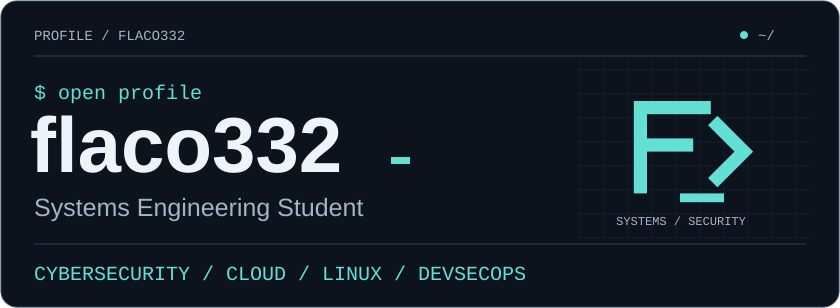
Projects · Tech stack · Focus · Connect
$ whoami
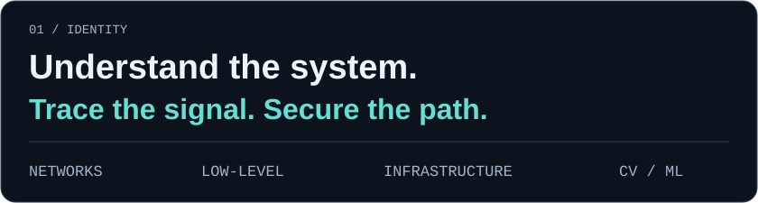
I'm a Systems Engineering Student focused on Cybersecurity, Cloud, Linux and DevSecOps. My interests connect networking and security with systems, low-level programming, and Computer Vision / ML.
I learn through hands-on projects: inspecting network traffic, building terminal tools, and working with local applications and data.
$ cat tech-stack.yaml
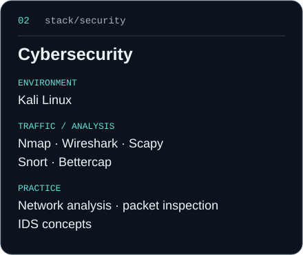 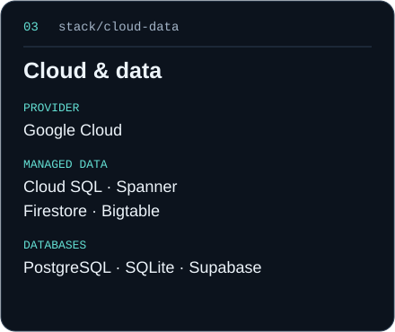 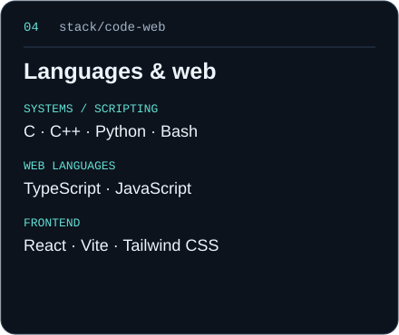 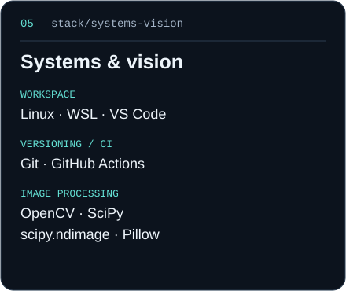
View the stack as YAML
languages:
- C
- C++
- Python
- TypeScript
- JavaScript
- Bash
cybersecurity:
tools: [Kali Linux, Nmap, Wireshark, Snort, Bettercap, Scapy]
practice:
- network analysis
- packet inspection
- IDS concepts
cloud:
provider: Google Cloud
data: [Cloud SQL, Spanner, Firestore, Bigtable]
databases: [PostgreSQL, SQLite, Supabase]
web: [React, Vite, Tailwind CSS]
computer_vision:
- OpenCV
- SciPy
- scipy.ndimage
- Pillow
systems: [Linux, Git, GitHub Actions, VS Code, WSL]$ ls projects/
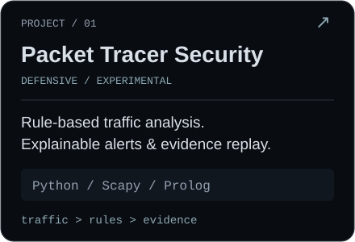 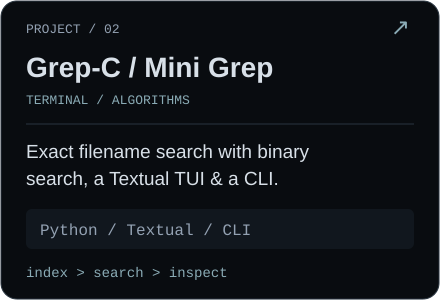 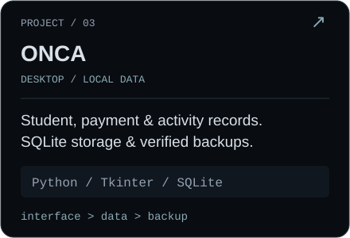
- Packet Tracer Security — experimental defensive traffic analysis with explainable rules and replayable evidence.
- Grep-C / Mini Grep — exact filename search with binary search, a terminal UI and a CLI, built in Python.
- ONCA — local desktop management for students, payments and activities, with SQLite and verified backups.
$ kubectl get skills --all-namespaces
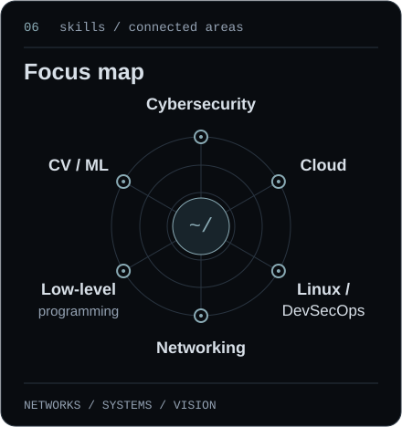 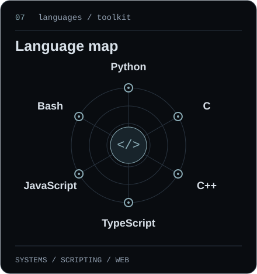
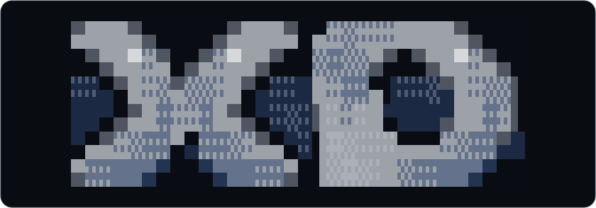
$ connect --socials
GitHub · Portfolio · Telegram · Email
github.com/flaco332 · @cr0dev · crdeveloper@proton.me
$ cat .off-duty
████ ███ ███
█ █ █ █
████ █ █
█ █ █ █ █ █
████ ██ ██Off the terminal, I practice Brazilian Jiu-Jitsu. Stay curious. Keep showing up.